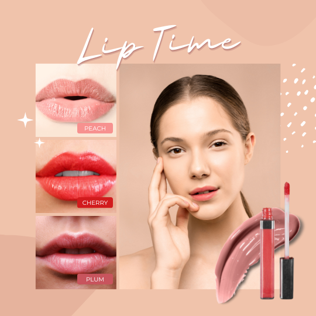
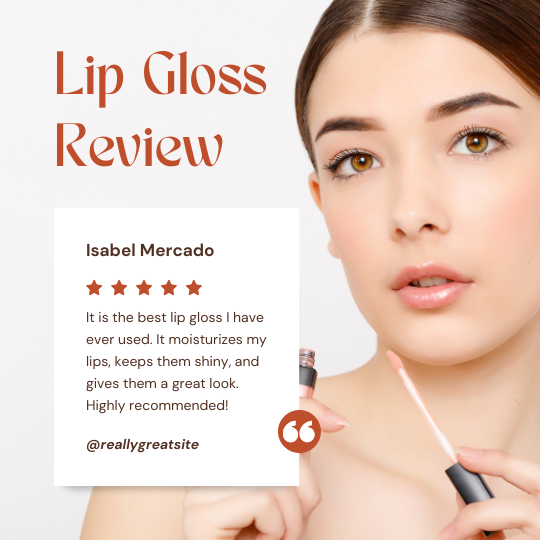

Magnificient lips without lip fillers ...
You sure dream about having nice full lip without surgery , Barvanie Cosmetics can help you to reach your desire. Barvanie Cosmetics are different gloss and lip injection gloss to help you to reach full lips , but you need to use regulary the product
Barvanie Cosmetics is the idea how every woman is beautiful and deserve full lips if you want them, our products are organics, no test on animal , they have no chemical.
With our products it is possible to reach the same result as if you use lip fillers treatments
 